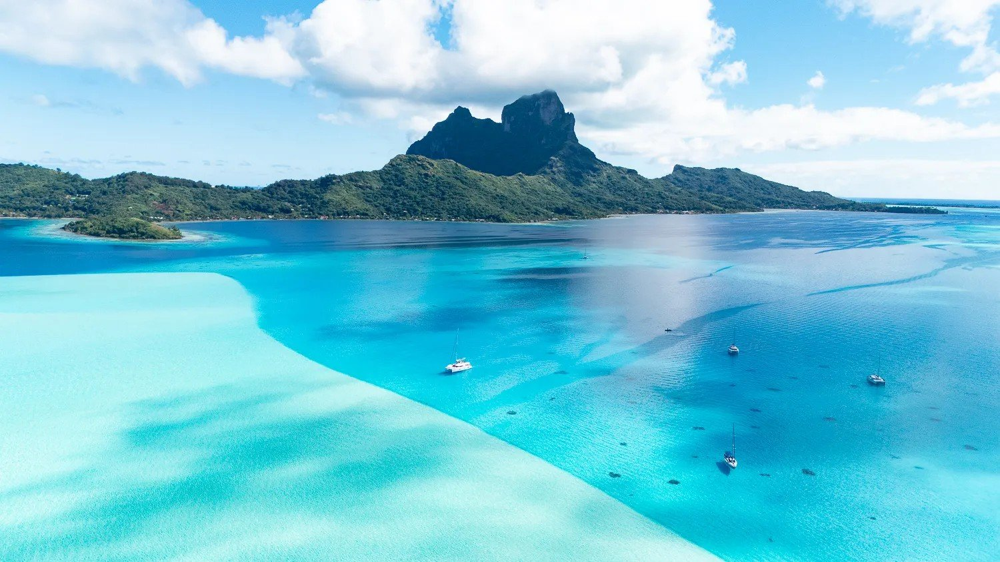
Sailing around French Polynesia in March offers warm, steady trade winds and calm lagoon waters—ideal for smooth passages between the Leeward Islands. Starting in Raiatea, the “Sacred Island,” you'll find lush mountains, ancient marae (islands) like Taputapuatea, and vibrant coral gardens perfect for drift dives. Bora Bora, the “Pearl of the Pacific,” dazzles with its turquoise lagoon, dramatic Mount Otemanu backdrop, and world-class snorkeling and diving—think manta ray encounters, coral canyons, and technicolor reef fish. In March, expect daytime temperatures around 80–86 °F with occasional tropical showers that keep the islands lush, plus fewer crowds than peak season. The water will be equally inviting with average temperatures between 82-84°F. Between sailing legs, you can explore vanilla plantations, enjoy some local cuisine, experience sunset anchorages, and dive sites like Bora Bora's Anau for manta rays or Raiatea's Nordby wreck for history beneath the waves—making each stop a blend of adventure, culture, and pure lagoon bliss.
3/7 Saturday Day 1 - Raiatea marina to Tipaemaua. 45 min boat ride.
Tyler and Vadym will need to begin the boat check out process at the Dreamyacht Charter office at 1 p.m. Our boat should be ready to go at 2 p.m. We'll meet up at the boat, load up the boat with our bags and groceries and get ready to set sail. Our first stop is a short 45 minute boat ride from the marina. It's a private island with beautiful beaches. We will have plenty of time for diving/snorkeling/beach activities.
3/8 Sunday Day 2 - Motu Tipaemaua to Fare Reef Huahine island. 22 nautical miles. 2:45 min boat ride.
We'll wake up and get going to Huahine island. Fare Reef anchorage has good swimming/snorkeling/diving near it. It is also dinghy distance to a town where we can go to the local distillery, refill our dive tanks, explore the island, and try out some local cuisine.
3/9 Monday Day 3 - Huahine to Motu Mahaea. 24 nautical miles. 3:00 Hr boat ride.
Ile Mahaea has a super sweet diving spot right near where we'll be anchoring. This is another remote island to relax at.
3/10 Tuesday Day 4 - Motu Mahaea to Bora Bora Yacht Club mooring. 29.9 nautical miles. 3:45 min boat ride.
We'll leave our remote island behind and head to the most famous island, Bora Bora. They changed anchoring laws around Bora Bora, so there are only 2 places for us to keep our boat. The Yacht Club has a nice dinghy zone where we'll be able to get to land easily.
3/11 Wednesday Day 5 - We are staying on Bora Bora.
3/12 Thursday Day 6 - Bora Bora to Motu Tau Tau on Tahaa. 25 nautical miles. 3:10 min boat road.
This is another island getaway, but there is a restaurant and resort here. This is also where the famous coral garden dive and snorkel site is. Along with "Love Island", a heart shaped beach.
3/13 Friday Day 7 - Tahaa back to Raiatea Dream Yacht Charter marina. 10.2 nautical miles. 1:20 min boat ride.
We have to be back at the anchorage by 5p.m. so we can spend more time at the beach of tau tau or take the dinghy over to the mainland of Tahaa before heading back to the marina. We will sleep on the boat this final night at the marina.
3/14 Saturday - We need to be fully off the boat with all of our stuff cleared out by 9 am.
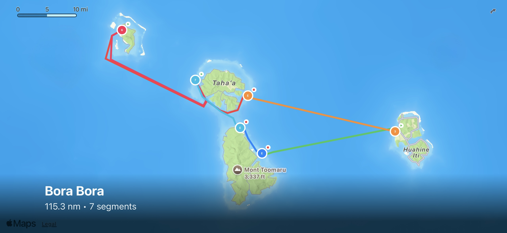
We chartered a Bali 4.5 Catamaran. It's 45 feet long. It comes with 4 cabins all with their own bathrooms. It has 2 additional porthole cabins for singles. Below are some images that Dreamyacht has of the Bali 4.5 boats. Ours might be a little different, but for the most part it will be like the below (click on the pictures to expand):
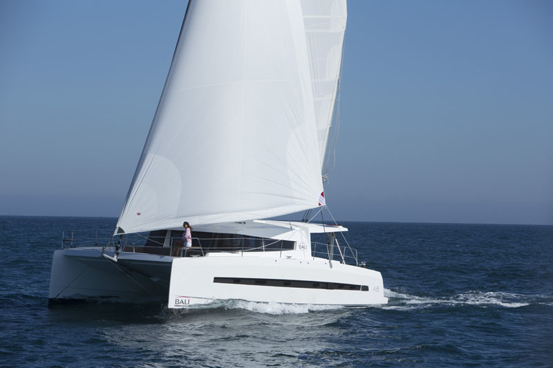
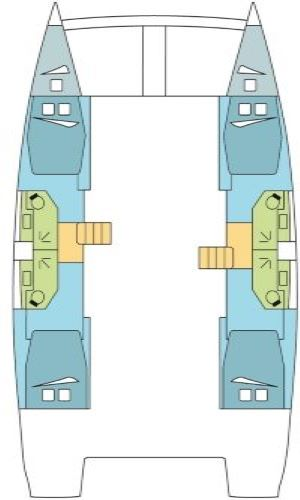
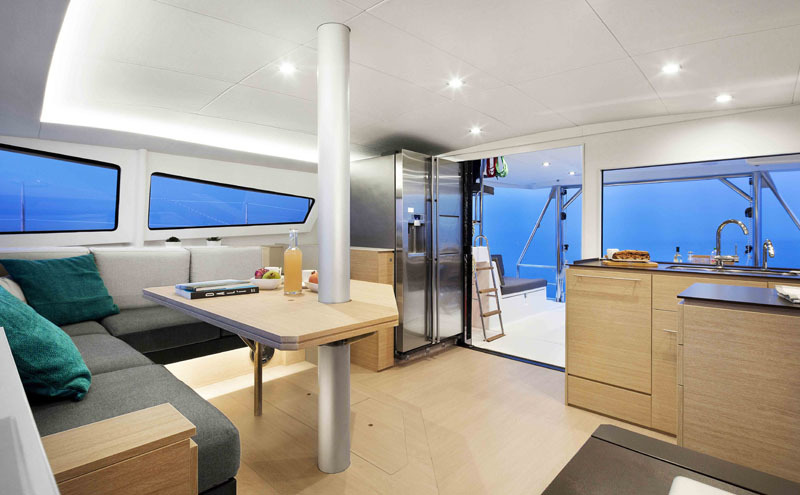
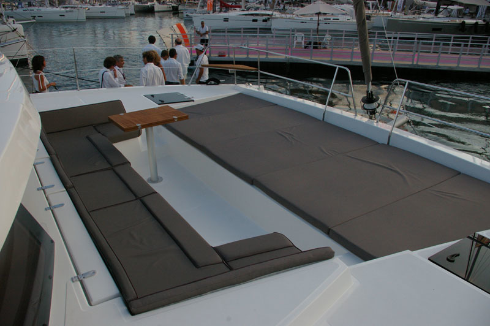
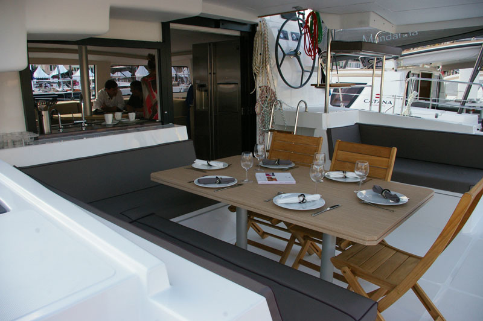
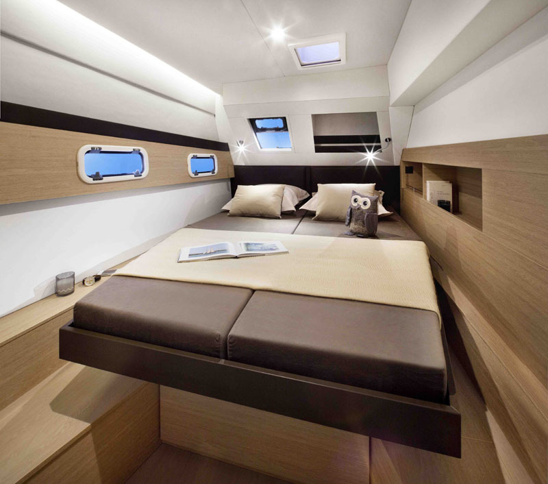
We'll be out at sea, so it's a good time to practice minimalism. Not too much storage in the cabins. The Charter company provides life jackets, bed sheets, blankets, and pillows. Everything else, we'll need to bring. Here is a list of the essentials to get you started:
For Scuba Divers
I already spoke to the local dive shop in Raiatea. They will rent us gear and deliver it to our boat! Please coordinate your own gear rental with shop. The shop is Hemisphere Sub Plongée.
Their email address is hemis-subdiving@mail.pf
Please fill out their FORM and email it over to them. Please also be sure to say that you are going on the same boat as "Vadym" so that they will know to bring all of the items over in one go.
Please DO NOT order more than 1 tank each. We have limited storage on the boat and won't be able to store everyone's tanks. There will be plenty of opportunities to get the air tanks refilled.
We will be sharing food and drink expenses as a group. Please fill out the food form with any food preferences/dietary restrictions. We will be spending time on remote islands where we'll want to cook on the boat. We'll also be spending time on islands with restaurants where we can try out local cuisine. Here is the food form link to fill out: Bora Bora Food Form
The trip will be a blast and we aren't expecting to have any major issues arise. Those of you who have already joined us on one of our sailing adventures know what to expect. Those of you who are new, please take the time to go over the links below:
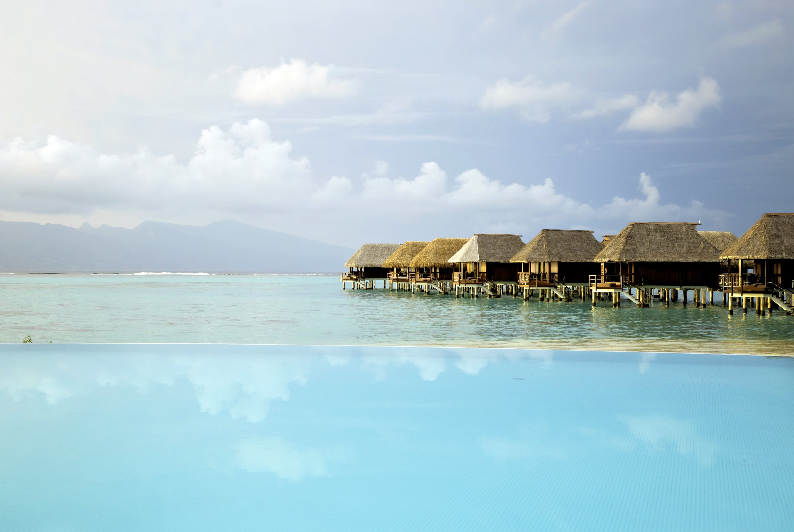
We'll gather at the Dream Yacht Charter office just before 2 p.m. at the Raiatea Dream Yacht Charter office, get our bags and provisions aboard, and settle into our floating home for the week. Once we're ready, we'll cast off for a short, scenic 45-minute cruise to a completely uninhabited island — the perfect place to kick off the vacation.
Out here, there's nothing but turquoise water, soft sand, and the kind of quiet that feels like a luxury. We'll ease into island time with a laid-back beach party, soak up the sun, swim, explore, and let the week's stress melt away. Lunch and dinner will be cooked right on the island, making this first stop feel like our own private paradise
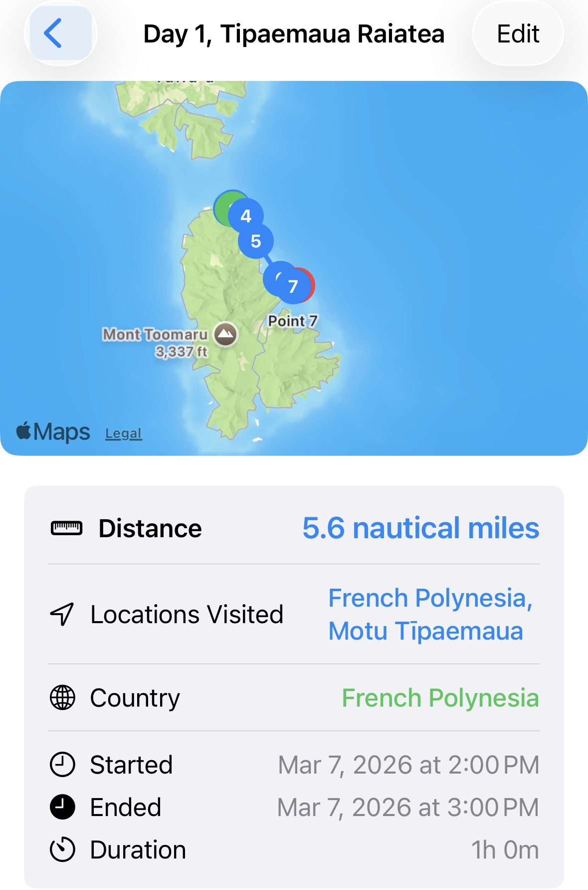
We have a 2:45 minute boat ride to get to the next island of Huahine. We will be anchoring at Fare anchorage. Fare is Huahine's main town. There is a dive site near the anchorage that we could dinghy to and explore. There is also some stuff to do on the mainland itself:
🏖️ Walk to Fare Beach
Fare has a surprisingly good beach within walking distance of the anchorage, just north of town. Great for:
🍍 Explore the Town of Fare
Fare is described as “one of the most charming towns in French Polynesia”. You'll find:
🍹 Enjoy Fare's Small Nightlife Scene
Fare has a bit of nightlife — nothing wild, but enough for a fun evening ashore.
🍫 Distillerie Huahine Passion
Ranked highly for tastings of local fruit liqueurs and chocolate products.
🐚 Huahine Pearl Farm
The #1 attraction on Tripadvisor. You take a boat to an above-water pearl farm with beautiful lagoon views.
🚴 Bike the Coastal Road
One of the top-ranked activities on Huahine is biking the coastal road. You can rent bikes in Fare and explore beaches, villages, and viewpoints.
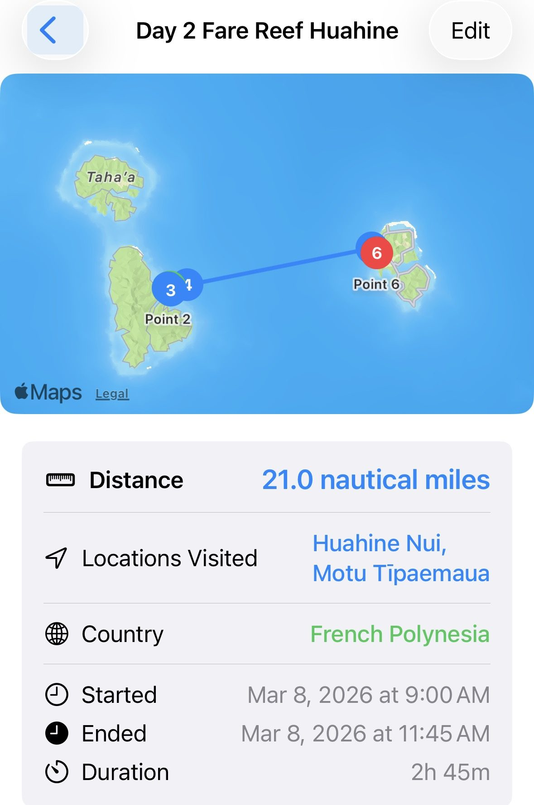
We have a 3 hour boat ride to get to our next destination. We will be going back to remote island fun in the sun. The anchorage at Ile Mahaea is very highly rated. It's supposed to have excellent snorkeling. There are also 3 dive sites right at this anchorage so we'll want to make sure that our tanks are full and ready to go.
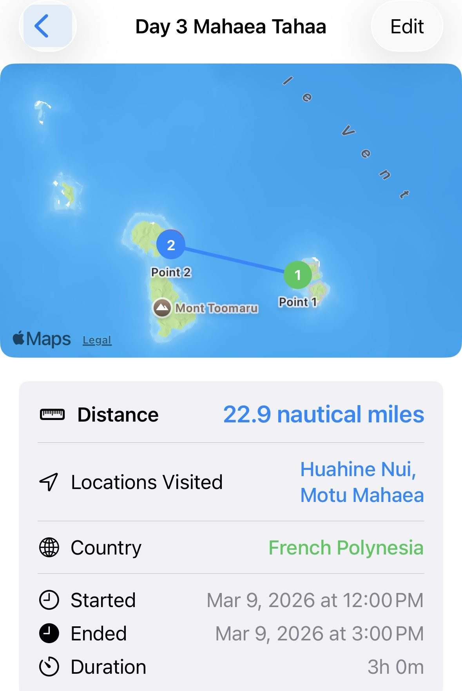
We will have our longest sailing day today. 3 hours and 45 minutes getting to world renowned Bora Bora. Once there, the world is your oyster. There are beaches, resorts, restaurants, dive companies, shops, hikes, bars. We will be mooring at the Bora Bora Yacht Club and will be using the dinghy to get to shore.
Here are some ideas:
🏖️ Relax at Matira Beach
One of the most famous beaches in the world — soft white sand, calm water, and perfect sunsets. Listed as a top attraction on Tripadvisor. Highlighted as the best free spot by WakaAbuja
🤿 Snorkel Coral Gardens
A top-rated snorkeling site with vibrant coral and tons of fish. Rated 4.9/5 and described as Bora Bora's top attraction by WakaAbuja. Also listed as a must-do by The Tourist Checklist
🐢 Visit the Bora Bora Lagoonarium
A natural lagoon with guided snorkeling and marine life encounters. One of the top attractions on Tripadvisor
🏔️ See Mount Otemanu
The dramatic volcanic peak that defines Bora Bora's skyline. Listed as the #1 attraction on BoraBoraIslandGuide. Featured in Lonely Planet's top experiences. You can't hike to the summit, but you can: take a 4x4 tour, hike partway, or photograph it from the lagoon (best views!)
🐠 Scuba Diving
Bora Bora has: manta ray cleaning stations, reef sharks, coral walls, and calm lagoon diving. Scuba diving is one of the top-listed activities on Tripadvisor.
🍹 Enjoy Beach Bars & Restaurants
Bora Bora is known for: Bloody Mary's, St. James, and Lagoon Restaurant (Jean-Georges). Great for sailors coming ashore.
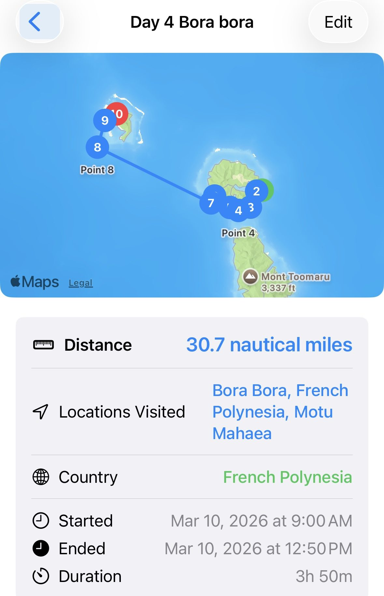
Another day in Bora Bora!
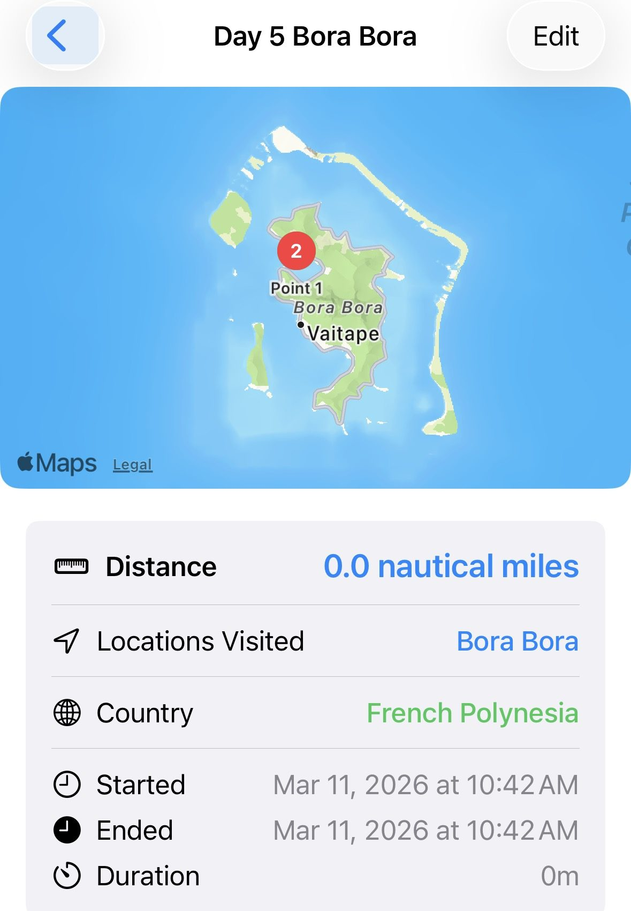
We have our longest sailing day today, just over 3 hours. We will be going to another island. This one does have a resort and restaurant on it, but it might not be open because of the season. This area is also known as "Love Island" because of the heart shaped beach. There is another very nice diving and snorkel spot right at the anchorage, so we'll want to make sure that our tanks are filled up for it. We are also a dinghy ride away from Village Teruaupai if we want to pop over to the mainland.
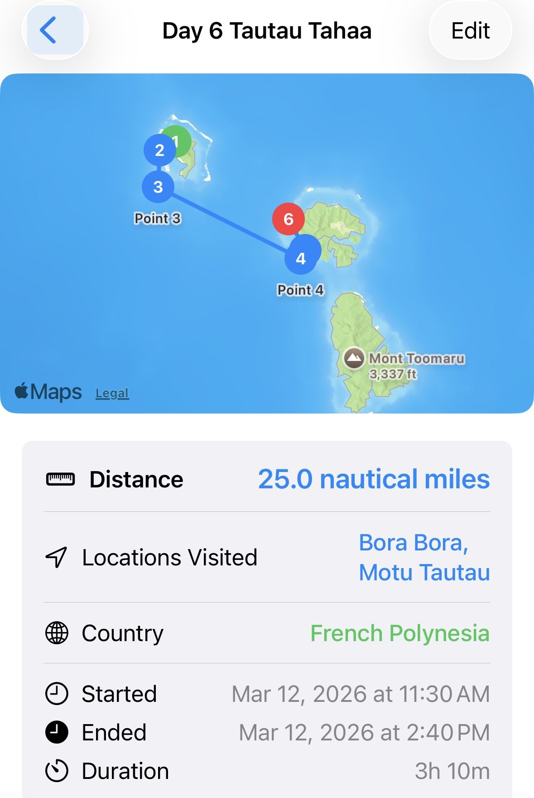
Our final day of the trip! We need to return the boat back to the marina by 5pm. Until then, we can stay and enjoy our island, or dinghy over to the mainland and check out the sites there. There is a vanilla tour that we could do on the mainland if we haven't done one up to this point. Once it gets close to 3:30 pm, we'll want to head back to the Raiatea marina.
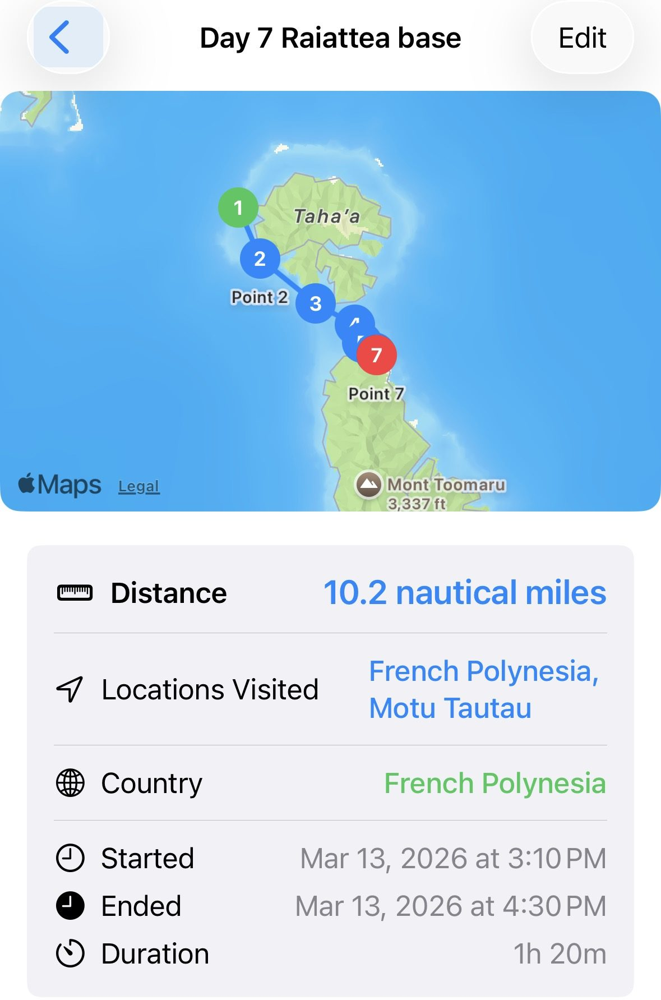